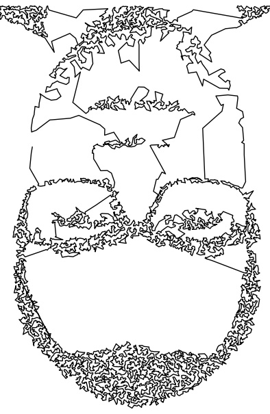

RandomCollection offers curated articles about economics, finance, statistics, and coding.
The idea of creating a website such as RandomCollection emerged when I was thinking about a way to maintain and organise small private projects as well as save loosely related notes about various topics which would otherwise be lost in the depth of the computer. In addition, I was always interested in the creation of a website in general and started to accumulate some basic knowledge about HTML and CSS. After building a first local offline version of this website I immediately sort of wanted to have it live. Not necessarily to reach a bigger audience but more like to own a live website myself. Due to lack of content I could put on the website I decided to use it as a notebook for all kind of random notes. Very naturally, this created an additional need to put the website live which would guarantee immediate access to the notes. After a quick Google search, it became clear that GitHub Pages offers the possibility to maintain a website for free. It was an easy choice.
I myself am a economist and econometrician by training and I am currently employed in the financial
industry working as a risk analytics and modelling manager. It was also only in current role that I
really got my hands into coding where I especially fell in love with Python.
The picture below shows myself as Travelling Salesperson Problem (TSP) rendered picture. The
methodology and underlying code can be accessed via the
Travelling-Salesperson-Problem-Art
repository.
